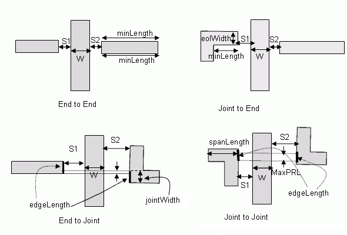
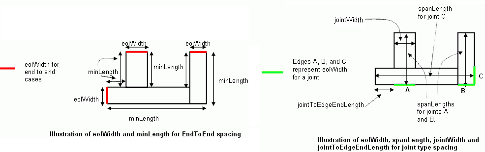

|
 |
 |
||||||
|
|
|
||||||
A spacing which applies to wires with two neighbor wires on opposite edges that has projected parallel run length < 0. The neighbor wires are classified either as a end-of-line or a T or L joint.
In the case where the neighbor wire is and end-of line, the rule may only apply if the neighbor end-of-line has a width < eolWidth, and possibly if the end-of-line length is >= minLength along both sides. Below is an illustration of how eolWidth and minLength should be calculated if the line below was a neighbor wire.
The neighbor wire end edge may also be considered a joint. There may be a requirement that it has width < jointWidth (if specified, otherwise < eolWidth), span > spanLength, and is not an EOL edge. If the spacing rule is specified as "joint to end" at least,one of the distance from the end points of the joint to the ends of the edge that containing the joint must be < jointToEdgeEndLength. A T or L configuration depicted below is a typical joint, but joints are not restricted to those configurations. Joints could be any edges that fulfill the above definition.
| Constraint type: | oaLayerConstraint |
| Value types: | oaValueArrayValue |
| Database types: | oaDesign, oaTech |
| Object types: | oaAppObject |
The following value types are supported by this constraint:
An oaValueArray of 4 oaDualIntValues. Each oaDualIntValue is set to S1, S2 from the diagram below. The index into the array is an enum for each of the cases: oacEndToEndSpacingType, oacEndToJointSpacingType, oacJointToEndSpacingType and oacJointToJointSpacingType. The array must have all four value pairs specified, and there is no default value assumed.
Units: DBU
The following parameters are supported by this constraint:
| Name | Value Type | Units | Default | Description |
|---|---|---|---|---|
| width oacWidthConstraintParamType |
oaIntValue | DBU | (Required) |
Corresponds to W. |
| endOfLineWidth oacEndOfLineWidthConstraintParamType |
oaIntValue | DBU | (Required) |
This parameter specifies the end of line width value (eolWidth). |
| length oacLengthConstraintParamType |
oaIntValue | DBU | None |
This parameter specifies the end of line length (minLength). If this parameter is not present, there is no requirement related to the length of the edge, adjacent to an end edge. |
| spanLength oacSpanLengthConstraintParamType |
oaIntValue | DBU | (Required) |
This parameter specifies the joint span length (spanLength). |
| jointWidth oacJointWidthConstraintParamType |
oaIntValue | DBU | None |
This parameter specifies the joint width (jointWidth). |
| jointToEdgeEndLength oacJointToEdgeEndLengthConstraintParamType |
oaIntValue | DBU | None |
This parameter specifies the joint to edge end length (jointToEdgeEndLength). |
| exceptEdgeLengthPRL oacExceptEdgeLengthPRLConstraintParamType |
oaValueArrayValue | DBU | None |
This oaValueArrayValue is mapped to a list of oaDualIntValues corresponding to edgeLength and maxPRL, or oaIntValues corresponding to just edgeLength. If this parameter is not present, there is no requirement related to the parallel run length of the edges on either side of the center shape. The rule does not apply if both of the joint or end neighbor edges have a length >= edgeLength, and, for oaDualIntValues, the projected parallel run is <= maxPRL. The valueArrayValue may contain up to 2 entries. |


Copyright 2002 - 2010 Cadence Design Systems, Inc.
All rights reserved.